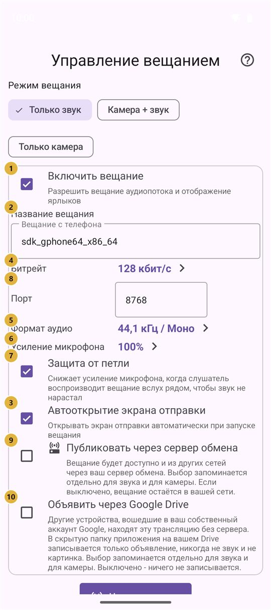
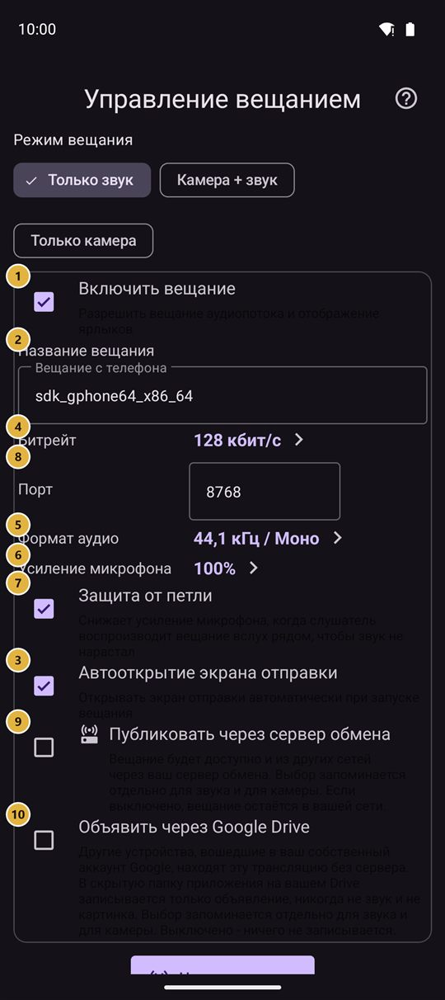

Настройки вещания
Для чего этот экран
Выбор, который определяет ваши вещания: как оно называется, как звучит и где его можно найти. Это страница «Трансляция» в настройках, она открывается из меню настроек или кнопкой «Настройки вещания» на экране «Управление вещанием» и сохраняется на следующий раз. Пока прямое вещание выключено, на странице есть только путь к его включению на странице «Основные».


Порядок действий
У этих настроек нет определённого порядка. Ниже они сгруппированы по назначению.
Элементы
Вещание
1Название вещанияИмя, которое видят слушатели.
Показывается в списке каналов у слушателя. Если оставить пустым, используется имя по умолчанию «Вещание с телефона».
Звук
3БитрейтСколько данных занимает секунда звука.
Чем выше битрейт, тем чище звук и тем больше расход сети. Для слабого соединения выберите поменьше.
4Формат аудиоЧастота дискретизации, моно или стерео.
Показывает частоту дискретизации в кГц и то, моно звук или стерео. Стерео несёт больше данных, чем моно.
5Усиление микрофонаГромкость микрофона.
Повышает или понижает уровень микрофона для всех слушателей.
6Защита от петлиНе даёт телефонам «свистеть».
Уменьшает усиление микрофона, когда слушатель включает вещание вслух рядом, чтобы звук не нарастал. Предупреждение на экране «Управление вещанием» сообщает, что защита сработала.
Как дойти до слушателей
7ПортСетевой порт вещания.
Устройства в вашей сети подключаются к этому порту. Меняйте его, только если порт по умолчанию уже занят другой программой.
- Отмена
- Введите прежний номер.
8Объявить через Google Drive: звукОбъявляет вещание через ваш Google Drive.
Другие устройства, вошедшие в ваш собственный аккаунт Google, находят это вещание без сервера. В скрытую папку приложения на вашем Drive записывается только объявление, никогда не звук и не картинка. Если выключено, ничего не записывается.
- Отмена
- Выключите.
9Объявить через Google Drive: камераТот же выбор для режимов с камерой.
Два режима с камерой делят этот выбор; строка выше относится к вещанию звука. Работает так же.
- Отмена
- Выключите.